Tank stats
The Best Performing Tanks
Relative WR
The graph shows the tanks with the highest Relative WR. That is the average of players’ WR in a tank compared to their average WR at the tier (in all same tier tanks). Relative WR is a measure of the performance/strength of the tank.
- All the statistics are about battles fought during the update 6.4 only.
- The impact of “Stock-grind battles” is reduced based on tier-specific requirement for total battles at the end of the update. Only players with more than 0-152 (depending on the tier) battles in a tank in the end of the update are included to eliminate the impact of the first battles in the tank (with sub-100% crew / modules).
- The players need to have 10-20 battles in a tank and 20-40 battles at the tier during the update.
- Average WR is the players’s average WR in the tank
- Player WR at Tier is the average WR of the players of the tank at the tier. Since different tiers have different difficulty, it is more meaningful to compare players’ performance in the same tier tanks.
- Only tanks with more than 400 players are listed. This may filter out few upcoming tanks that are being tested.
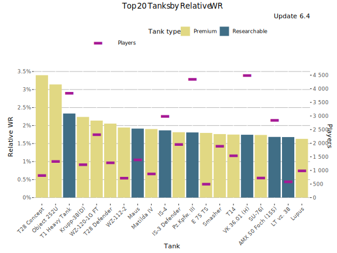
Highest Relative WR - Table
| Tank | Relative WR | Average WR | Player WR at Tier | Players | Battles/Player | Tank type |
|---|---|---|---|---|---|---|
| T28 Concept | 4.02% | 57.8% | 53.8% | 666 | 64 | Premium |
| Object 252U | 3.12% | 58.3% | 55.2% | 1 306 | 78 | Premium |
| T1 Heavy Tank | 2.81% | 57.1% | 54.3% | 2 786 | 73 | Researchable |
| Pz.Kpfw. III | 2.25% | 58.6% | 56.4% | 1 916 | 79 | Researchable |
| Krupp-38(D) | 2.16% | 58.2% | 56% | 1 135 | 67 | Premium |
| VK 36.01 (H) | 2.15% | 55% | 52.8% | 3 637 | 72 | Researchable |
| WZ-120-1G FT | 2.15% | 59.3% | 57.1% | 2 266 | 99 | Premium |
| Matilda IV | 2.06% | 55.9% | 53.9% | 758 | 84 | Premium |
| IS-4 | 1.96% | 53.7% | 51.8% | 2 608 | 68 | Researchable |
| T28 Defender | 1.95% | 55.3% | 53.4% | 1 219 | 72 | Premium |
| WZ-112-2 | 1.93% | 56% | 54.1% | 680 | 56 | Premium |
| Maus | 1.93% | 54.7% | 52.7% | 1 217 | 60 | Researchable |
| IS-3 Defender | 1.89% | 56.5% | 54.6% | 1 696 | 85 | Premium |
| Smasher | 1.78% | 59.8% | 58% | 1 831 | 126 | Premium |
| Tiger (P) | 1.75% | 53.2% | 51.4% | 6 640 | 69 | Researchable |
| Durchbruchswagen 2 | 1.75% | 59.1% | 57.3% | 770 | 69 | Premium |
| T14 | 1.73% | 55.9% | 54.2% | 1 326 | 75 | Premium |
| E 75 TS | 1.72% | 55.3% | 53.6% | 488 | 63 | Premium |
| AMX 50 Foch (155) | 1.66% | 56.8% | 55.2% | 2 735 | 96 | Researchable |
| T110E3 | 1.64% | 53.6% | 52% | 1 148 | 71 | Researchable |
Highest Average WR
This graph shows the tanks with the highest average WR during update 6.4. Player WR denotes the tank’s players’ average WR across all the tanks during the update.
- Only battles in maxed-out tanks are taken into account. It is assumed that a tank is maxed out if it is a) premium tank or b) player has more than certain number of battles in it in the end of the update (tier dependent: Tier I: 0 battles, Tier X: 152 battles.
- Since the data is fetched once per update, the stats for just released new Tech-Tree tanks is lower than it should be since the battles players ground the tanks from stock are included in the average.
- On the other hand new high tier tanks are often ground first by more active and also better players that distorts the average WR.
- Only tanks with more than 400 players are listed. This may filter out few upcoming tanks that are being tested.
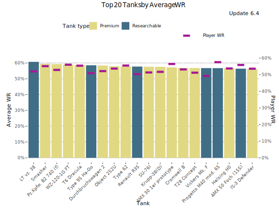
Highest Average WR - Table
Average WR denotes average WR in a tank across all the players during the update. Player WR denotes the tank’s players’ average WR across all the tanks during the update.
| Tank | Average WR | Player WR | Players | Battles/Player | Tank type |
|---|---|---|---|---|---|
| LT vz. 38 | 62.5% | 52.9% | 556 | 43 | Researchable |
| Smasher | 59.7% | 55.5% | 1 988 | 122 | Premium |
| BT-2 | 59.7% | 51.7% | 665 | 45 | Researchable |
| WZ-120-1G FT | 59.3% | 56.4% | 2 367 | 98 | Premium |
| Durchbruchswagen 2 | 59.3% | 52.5% | 1 134 | 65 | Premium |
| T6 Dracula | 59.1% | 55.9% | 4 581 | 85 | Premium |
| Pz.Kpfw. III | 58.9% | 51.2% | 2 732 | 73 | Researchable |
| Type 62 | 58.7% | 56.3% | 1 858 | 66 | Premium |
| Cruiser Mk. II | 58.4% | 50.5% | 617 | 41 | Researchable |
| Object 252U | 58.2% | 54.1% | 1 379 | 77 | Premium |
| Krupp-38(D) | 58.2% | 52.4% | 1 216 | 66 | Premium |
| T-26 | 58.2% | 51.2% | 569 | 37 | Researchable |
| Renault R35 | 58% | 50.8% | 499 | 44 | Researchable |
| T28 Concept | 57.8% | 51.5% | 719 | 63 | Premium |
| Cromwell B | 57.7% | 53.8% | 1 609 | 58 | Premium |
| M2 Light Tank | 57.7% | 50.3% | 565 | 41 | Researchable |
| AMX 30 1er prototype | 57.6% | 57% | 2 023 | 68 | Premium |
| Vickers Mk. F | 57.3% | 49.7% | 1 769 | 35 | Researchable |
| T1 Heavy Tank | 57.2% | 51.5% | 3 041 | 71 | Researchable |
| Helsing H0 | 57.1% | 54.2% | 5 806 | 91 | Premium |
Highest Average Damage (tier-for-tier)
This graph shows the tanks with the highest average damage vs tier average during update 6.4. For the overall highest average damage chart, please see Tier X Average Damage rankings.
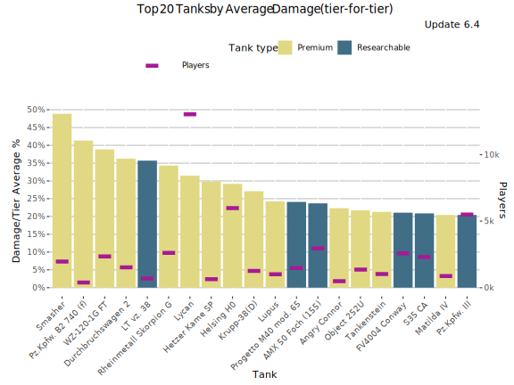
Highest Average Damage (tier-for-tier) - Table
| Tank | Damage/Tier Average % | Average WR | Average Damage | Players | Tier | Vehicle Class | Tank type |
|---|---|---|---|---|---|---|---|
| Smasher | 43.2% | 59.4% | 1 535 | 1 988 | 7 | Heavy Tank | Premium |
| Durchbruchswagen 2 | 35.5% | 59.7% | 550 | 1 134 | 4 | Heavy Tank | Premium |
| WZ-120-1G FT | 34.3% | 59.8% | 1 735 | 2 367 | 8 | Tank Destroyer | Premium |
| Rheinmetall Skorpion G | 29.9% | 55.3% | 1 677 | 2 639 | 8 | Tank Destroyer | Premium |
| Lycan | 26.9% | 56.1% | 1 360 | 13 352 | 7 | Heavy Tank | Premium |
| Krupp-38(D) | 24.8% | 58% | 760 | 1 216 | 5 | Medium Tank | Premium |
| Helsing H0 | 24.5% | 56.9% | 1 334 | 5 806 | 7 | Tank Destroyer | Premium |
| T1 Heavy Tank | 24.3% | 58.1% | 757 | 3 041 | 5 | Heavy Tank | Researchable |
| LT vz. 38 | 23% | 64.6% | 426 | 556 | 2 | Light Tank | Researchable |
| Lupus | 20.6% | 56.1% | 1 293 | 940 | 7 | Heavy Tank | Premium |
| Progetto M40 mod. 65 | 20.6% | 56.1% | 2 296 | 1 493 | 10 | Medium Tank | Researchable |
| AMX 50 Foch (155) | 20.3% | 56.6% | 2 289 | 2 934 | 10 | Tank Destroyer | Researchable |
| Stridsvagn 74A2 | 20.2% | 55.7% | 1 031 | 1 660 | 6 | Medium Tank | Premium |
| Angry Connor | 18.7% | 52.7% | 723 | 422 | 5 | Tank Destroyer | Premium |
| S35 CA | 18.5% | 53% | 722 | 1 719 | 5 | Tank Destroyer | Researchable |
| Pz.Kpfw. III | 18.4% | 59.2% | 506 | 2 732 | 3 | Medium Tank | Researchable |
| Matilda IV | 18.3% | 56.2% | 721 | 811 | 5 | Medium Tank | Premium |
| Object 252U | 18.1% | 57.3% | 1 524 | 1 379 | 8 | Heavy Tank | Premium |
| Tankenstein | 16.4% | 54.8% | 1 247 | 868 | 7 | Heavy Tank | Premium |
| BT-2 | 16.1% | 60.1% | 402 | 665 | 2 | Light Tank | Researchable |
Highest Average Kills/Battle
This graph shows the tanks with the most kills per battle on average WR during update 6.4. Player WR denotes the tank’s players’ average WR across all the tanks during the update.
- Only battles in maxed-out tanks are taken into account. It is assumed that a tank is maxed out if it is a) premium tank or b) player has more than certain number of battles in it in the end of the update (tier dependent: Tier I: 0 battles, Tier X: 152 battles.
- Since the data is fetched once per update, the stats for just released new Tech-Tree tanks is lower than it should be since the battles players ground the tanks from stock are included in the average.
- On the other hand new high tier tanks are often ground first by more active and also better players that distorts the stats for those.
- Only tanks with more than 400 players are listed. This may filter out few upcoming tanks that are being tested.
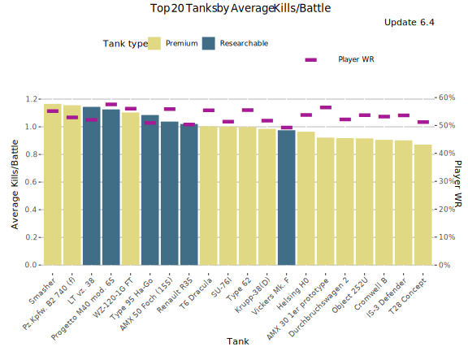
Highest Average Kills/Battle - Table
Average WR denotes average WR in a tank across all the players during the update. Player WR denotes the tank’s players’ average WR across all the tanks during the update.
| Tank | Average Kills/Battle | Average WR | Player WR | Players | Battles/Player | Tank type |
|---|---|---|---|---|---|---|
| LT vz. 38 | 1.14 | 62.5% | 52.9% | 556 | 43 | Researchable |
| Smasher | 1.18 | 59.7% | 55.5% | 1 988 | 122 | Premium |
| BT-2 | 1.09 | 59.7% | 51.7% | 665 | 45 | Researchable |
| WZ-120-1G FT | 1.11 | 59.3% | 56.4% | 2 367 | 98 | Premium |
| Durchbruchswagen 2 | 0.89 | 59.3% | 52.5% | 1 134 | 65 | Premium |
| T6 Dracula | 1.02 | 59.1% | 55.9% | 4 581 | 85 | Premium |
| Pz.Kpfw. III | 1.09 | 58.9% | 51.2% | 2 732 | 73 | Researchable |
| Type 62 | 1.02 | 58.7% | 56.3% | 1 858 | 66 | Premium |
| Cruiser Mk. II | 1.02 | 58.4% | 50.5% | 617 | 41 | Researchable |
| Object 252U | 0.93 | 58.2% | 54.1% | 1 379 | 77 | Premium |
| Krupp-38(D) | 1.00 | 58.2% | 52.4% | 1 216 | 66 | Premium |
| T-26 | 1.02 | 58.2% | 51.2% | 569 | 37 | Researchable |
| Renault R35 | 0.99 | 58% | 50.8% | 499 | 44 | Researchable |
| T28 Concept | 0.90 | 57.8% | 51.5% | 719 | 63 | Premium |
| Cromwell B | 0.93 | 57.7% | 53.8% | 1 609 | 58 | Premium |
| M2 Light Tank | 0.95 | 57.7% | 50.3% | 565 | 41 | Researchable |
| AMX 30 1er prototype | 0.94 | 57.6% | 57% | 2 023 | 68 | Premium |
| Vickers Mk. F | 0.95 | 57.3% | 49.7% | 1 769 | 35 | Researchable |
| T1 Heavy Tank | 1.03 | 57.2% | 51.5% | 3 041 | 71 | Researchable |
| Helsing H0 | 0.98 | 57.1% | 54.2% | 5 806 | 91 | Premium |
Highest Spot Rate
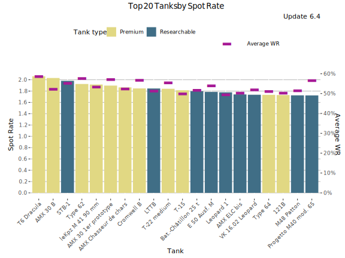
Highest Spot Rate - Table
| Tank | Spot Rate | Average WR | Player WR | Players | Battles/Player | Tank type |
|---|---|---|---|---|---|---|
| T6 Dracula | 2.07 | 59.1% | 55.9% | 4 581 | 85 | Premium |
| AMX 30 B | 2.04 | 52.8% | 56% | 1 738 | 72 | Premium |
| STB-1 | 2.01 | 55.9% | 57.4% | 2 031 | 77 | Researchable |
| Type 62 | 1.96 | 58.7% | 56.3% | 1 858 | 66 | Premium |
| leKpz M 41 90 mm | 1.93 | 54.1% | 55.6% | 947 | 55 | Premium |
| AMX 30 1er prototype | 1.92 | 57.6% | 57% | 2 023 | 68 | Premium |
| AMX Chasseur de chars | 1.87 | 53% | 54.3% | 6 268 | 69 | Premium |
| LTTB | 1.87 | 52% | 51.4% | 6 501 | 68 | Researchable |
| Cromwell B | 1.86 | 57.7% | 53.8% | 1 609 | 58 | Premium |
| T-22 medium | 1.85 | 55.8% | 57.4% | 751 | 55 | Premium |
| E 50 Ausf. M | 1.81 | 54.5% | 56.1% | 3 452 | 72 | Researchable |
| Bat.-Châtillon 25 t | 1.81 | 52% | 54.5% | 5 240 | 70 | Researchable |
| AMX ELC bis | 1.80 | 51.4% | 50.4% | 2 154 | 52 | Researchable |
| Leopard 1 | 1.79 | 49.7% | 53.4% | 4 433 | 74 | Researchable |
| VK 28.01 | 1.76 | 54% | 51.8% | 5 887 | 75 | Researchable |
| VK 16.02 Leopard | 1.76 | 53.4% | 51.2% | 10 641 | 68 | Researchable |
| Spähpanzer Ru 251 | 1.75 | 50.3% | 51.9% | 4 126 | 65 | Researchable |
| M48 Patton | 1.74 | 51.8% | 54.2% | 1 453 | 63 | Researchable |
| 121B | 1.74 | 50.5% | 55% | 788 | 57 | Premium |
| Object 140 | 1.74 | 52.5% | 54.7% | 4 275 | 78 | Researchable |
Highest Hit Rate
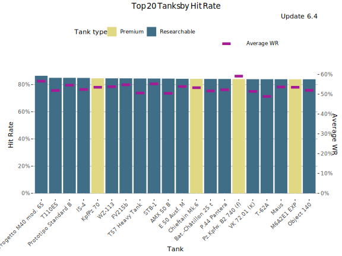
Highest Hit Rate - Table
| Tank | Hit Rate | Average WR | Player WR | Players | Battles/Player | Tank type |
|---|---|---|---|---|---|---|
| Progetto M40 mod. 65 | 86.5% | 56.9% | 57.9% | 1 493 | 212 | Researchable |
| Prototipo Standard B | 85.1% | 55% | 54.7% | 3 029 | 195 | Researchable |
| T110E5 | 84.9% | 52.4% | 53.7% | 2 132 | 65 | Researchable |
| IS-4 | 84.8% | 52.9% | 52.6% | 3 132 | 71 | Researchable |
| KpfPz 70 | 84.7% | 53.9% | 53.5% | 3 181 | 58 | Premium |
| WZ-113 | 84.6% | 54.4% | 56.9% | 848 | 54 | Researchable |
| FV215b | 84.6% | 55.7% | 56.5% | 1 670 | 65 | Researchable |
| STB-1 | 84.5% | 55.9% | 57.4% | 2 031 | 77 | Researchable |
| T57 Heavy Tank | 84.4% | 50.9% | 52.1% | 5 937 | 80 | Researchable |
| AMX 50 B | 84.4% | 50.8% | 51.7% | 4 642 | 82 | Researchable |
| Chieftain Mk.6 | 84.3% | 53.8% | 56% | 2 435 | 65 | Premium |
| E 50 Ausf. M | 84.2% | 54.5% | 56.1% | 3 452 | 72 | Researchable |
| P.44 Pantera | 84.2% | 52.6% | 53.2% | 7 480 | 131 | Researchable |
| Bat.-Châtillon 25 t | 84.2% | 52% | 54.5% | 5 240 | 70 | Researchable |
| M6A2E1 EXP | 84% | 53.9% | 52.7% | 8 480 | 76 | Premium |
| VK 72.01 (K) | 83.9% | 51.7% | 52.6% | 1 327 | 69 | Researchable |
| Maus | 83.9% | 54.2% | 53.6% | 1 392 | 61 | Researchable |
| T-22 medium | 83.9% | 55.8% | 57.4% | 751 | 55 | Premium |
| 121B | 83.9% | 50.5% | 55% | 788 | 57 | Premium |
| T-62A | 83.9% | 49.3% | 52.2% | 4 443 | 76 | Researchable |
Most played tanks (Players)
This graph shows the most played tanks by players during the update 6.4.
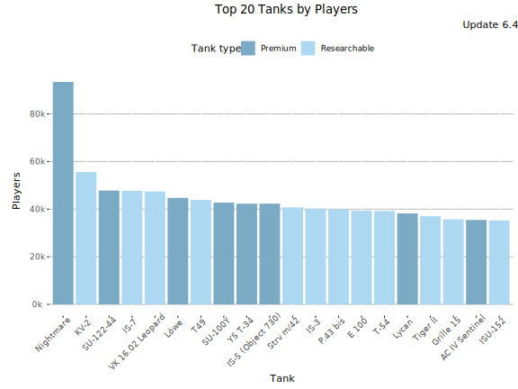
Most Played Tanks (Players)- Table
| Tank | Players | Average WR | Battles/Player | Tank type |
|---|---|---|---|---|
| Nightmare | 93 427 | 52.2% | 14 | Premium |
| KV-2 | 55 608 | 52.1% | 19 | Researchable |
| SU-122-44 | 47 825 | 54.1% | 15 | Premium |
| IS-7 | 47 727 | 52.5% | 17 | Researchable |
| VK 16.02 Leopard | 47 415 | 53.5% | 20 | Researchable |
| Löwe | 44 726 | 54.1% | 26 | Premium |
| T49 | 43 881 | 52.1% | 31 | Researchable |
| SU-100Y | 42 771 | 55.1% | 21 | Premium |
| Y5 T-34 | 42 305 | 55.2% | 13 | Premium |
| IS-5 (Object 730) | 42 300 | 56.3% | 15 | Premium |
| Strv m/42 | 40 732 | 50.9% | 15 | Researchable |
| IS-3 | 40 206 | 52.2% | 20 | Researchable |
| P.43 bis | 39 935 | 51.6% | 25 | Researchable |
| E 100 | 39 389 | 53.2% | 22 | Researchable |
| T-54 | 39 226 | 52.8% | 24 | Researchable |
| Lycan | 38 214 | 57.3% | 26 | Premium |
| Tiger II | 37 029 | 53.1% | 22 | Researchable |
| Grille 15 | 35 719 | 49.9% | 30 | Researchable |
| AC IV Sentinel | 35 475 | 54.5% | 9 | Premium |
| ISU-152 | 35 294 | 50.9% | 30 | Researchable |
Most played tanks (Battles)
This graph shows the most played tanks by number of battles during the update 6.4.
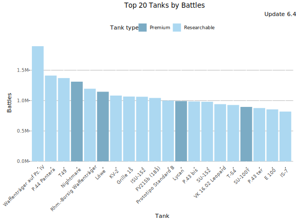
Most Played Tanks - Table
| Tank | Battles | Average WR | Players | Battles/Player | Tank type |
|---|---|---|---|---|---|
| Waffenträger auf Pz. IV | 1 900k | 52.4% | 32 204 | 59 | Researchable |
| P.44 Pantera | 1 400k | 52.9% | 23 318 | 61 | Researchable |
| T49 | 1 400k | 52.1% | 43 881 | 31 | Researchable |
| Nightmare | 1 300k | 52.2% | 93 427 | 14 | Premium |
| Rhm.-Borsig Waffenträger | 1 200k | 51.9% | 33 127 | 36 | Researchable |
| Löwe | 1 100k | 54.1% | 44 726 | 26 | Premium |
| KV-2 | 1 100k | 52.1% | 55 608 | 19 | Researchable |
| Grille 15 | 1 100k | 49.9% | 35 719 | 30 | Researchable |
| ISU-152 | 1 100k | 50.9% | 35 294 | 30 | Researchable |
| FV215b (183) | 1 000k | 49.1% | 31 987 | 33 | Researchable |
| Prototipo Standard B | 1 000k | 54.9% | 12 925 | 77 | Researchable |
| Lycan | 990k | 57.3% | 38 214 | 26 | Premium |
| P.43 bis | 990k | 51.6% | 39 935 | 25 | Researchable |
| SU-152 | 980k | 53% | 34 045 | 29 | Researchable |
| VK 16.02 Leopard | 940k | 53.5% | 47 415 | 20 | Researchable |
| T-54 | 930k | 52.8% | 39 226 | 24 | Researchable |
| SU-100Y | 900k | 55.1% | 42 771 | 21 | Premium |
| P.43 ter | 880k | 51.4% | 24 682 | 36 | Researchable |
| E 100 | 860k | 53.2% | 39 389 | 22 | Researchable |
| IS-7 | 820k | 52.5% | 47 727 | 17 | Researchable |
Lowest Performing Tanks
Lowest Relative WR
The graph shows the tanks with the lowest Relative WR. That is the average of players’ WR in a tank compared to their average WR at the tier (in all same tier tanks). Relative WR is a measure of the performance/strength of the tank.
- All the statistics are about battles fought during the update 6.4 only.
- The impact of “Stock-grind battles” is reduced based on tier-specific requirement for total battles at the end of the update. Only players with more than 0-152 (depending on the tier) battles in a tank in the end of the update are included to eliminate the impact of the first battles in the tank (with sub-100% crew / modules).
- The players need to have 10-20 battles in a tank and 20-40 battles at the tier during the update.
- Average WR is the players’s average WR in the tank
- Player WR at Tier is the average WR of the players of the tank at the tier. Since different tiers have different difficulty, it is more meaningful to compare players’ performance in the same tier tanks.
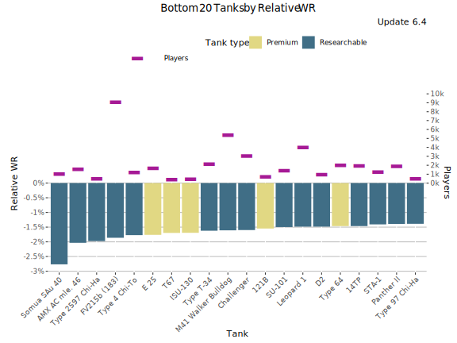
Lowest Relative WR - Table
| Tank | Relative WR | Average WR | Player WR at Tier | Players | Battles/Player | Tank type |
|---|---|---|---|---|---|---|
| AMX AC mle. 46 | -2.25% | 48% | 50.2% | 1 195 | 64 | Researchable |
| Type T-34 | -2.08% | 49% | 51.1% | 1 226 | 44 | Researchable |
| FV215b (183) | -1.96% | 48.7% | 50.7% | 8 407 | 87 | Researchable |
| ISU-130 | -1.85% | 48.9% | 50.8% | 448 | 62 | Premium |
| E 25 | -1.81% | 50.5% | 52.3% | 1 368 | 67 | Premium |
| Challenger | -1.79% | 48.3% | 50.1% | 2 417 | 54 | Researchable |
| 121B | -1.78% | 51.3% | 53.1% | 677 | 55 | Premium |
| Cruiser Mk. IV | -1.77% | 50.1% | 51.9% | 822 | 57 | Researchable |
| SU-101 | -1.73% | 48.5% | 50.2% | 1 106 | 67 | Researchable |
| M41 Walker Bulldog | -1.72% | 49% | 50.8% | 4 312 | 65 | Researchable |
| Type 4 Chi-To | -1.72% | 50% | 51.8% | 835 | 51 | Researchable |
| STA-1 | -1.61% | 48.4% | 50% | 920 | 66 | Researchable |
| Panther II | -1.6% | 47.8% | 49.4% | 1 440 | 67 | Researchable |
| Pz.Kpfw. II | -1.6% | 52.5% | 54.1% | 437 | 35 | Researchable |
| Churchill I | -1.58% | 49% | 50.6% | 1 138 | 45 | Researchable |
| Leopard 1 | -1.52% | 50.7% | 52.2% | 3 672 | 71 | Researchable |
| Y5 ELC bis | -1.49% | 48.3% | 49.8% | 2 479 | 54 | Premium |
| ARL V39 | -1.48% | 50% | 51.5% | 1 093 | 54 | Researchable |
| Centurion Mk. I | -1.43% | 47.5% | 48.9% | 1 042 | 60 | Researchable |
| T25/2 | -1.43% | 48% | 49.4% | 1 584 | 57 | Researchable |
Lowest Average WR
This graph shows the tanks with the lowest average WR during update 6.4. Player WR denotes the tank’s players’ average WR across all the tanks during the update. Only tanks with more than 400 players are listed. This may filter out few upcoming tanks that are being tested.

Lowest Average WR - Table
Average WR denotes average WR in a tank across all the players during the update. Player WR denotes the tank’s players’ average WR across all the tanks during the update.
| Tank | Average WR | Player WR | Players | Battles/Player | Tank type |
|---|---|---|---|---|---|
| Centurion Mk. I | 47% | 49.4% | 1 277 | 62 | Researchable |
| VK 30.02 (D) | 47.3% | 48.2% | 565 | 60 | Researchable |
| Panther II | 47.5% | 49.7% | 1 668 | 69 | Researchable |
| T20 | 47.6% | 49.2% | 994 | 61 | Researchable |
| M26 Pershing | 47.8% | 49.5% | 1 087 | 64 | Researchable |
| KV-4 | 47.8% | 48.6% | 2 284 | 67 | Researchable |
| T25/2 | 47.9% | 49.5% | 1 862 | 58 | Researchable |
| Indien-Panzer | 47.9% | 49.1% | 1 049 | 67 | Researchable |
| AMX AC mle. 46 | 48% | 50.4% | 1 349 | 63 | Researchable |
| T32 | 48.1% | 48.9% | 1 360 | 67 | Researchable |
| STA-1 | 48.1% | 50.4% | 1 060 | 68 | Researchable |
| Sturer Emil | 48.1% | 49.6% | 3 039 | 69 | Researchable |
| Somua SAu 40 | 48.2% | 49.9% | 579 | 25 | Researchable |
| T28 | 48.2% | 49.6% | 605 | 72 | Researchable |
| Jagdpanther | 48.2% | 48.8% | 2 681 | 59 | Researchable |
| Challenger | 48.3% | 50.3% | 2 757 | 53 | Researchable |
| Y5 ELC bis | 48.3% | 50.1% | 2 730 | 54 | Premium |
| AT 7 | 48.3% | 48.3% | 746 | 61 | Researchable |
| T69 | 48.3% | 48.9% | 1 380 | 75 | Researchable |
| Caernarvon | 48.3% | 49.7% | 1 211 | 68 | Researchable |
Lowest Average Damage (tier-for-tier)
This graph shows the tanks with the lowest average damage vs tier average during update 6.4.
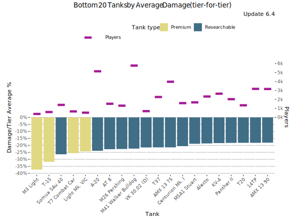
Lowest Average Damage (tier-for-tier) - Table
| Tank | Damage/Tier Average % | Average WR | Average Damage | Players | Tier | Vehicle Class | Tank type |
|---|---|---|---|---|---|---|---|
| Pz.Kpfw. II | -26.7% | 53.1% | 216 | 774 | 1 | Light Tank | Researchable |
| VK 30.02 (D) | -23.5% | 46.9% | 820 | 565 | 7 | Medium Tank | Researchable |
| M41 Walker Bulldog | -23.4% | 49.2% | 821 | 4 984 | 7 | Light Tank | Researchable |
| M26 Pershing | -23.4% | 47.9% | 989 | 1 087 | 8 | Medium Tank | Researchable |
| AMX 13 75 | -22.2% | 49.1% | 834 | 3 353 | 7 | Light Tank | Researchable |
| T37 | -21.7% | 48.6% | 672 | 1 722 | 6 | Light Tank | Researchable |
| Centurion Mk. I | -21.4% | 47.1% | 1 014 | 1 277 | 8 | Medium Tank | Researchable |
| A-20 | -21.2% | 50.8% | 320 | 1 528 | 4 | Light Tank | Researchable |
| Somua SAu 40 | -21.2% | 48% | 320 | 579 | 4 | Tank Destroyer | Researchable |
| Y5 ELC bis | -21% | 47.9% | 847 | 2 730 | 7 | Medium Tank | Premium |
| AT 8 | -20.9% | 48.6% | 679 | 1 077 | 6 | Tank Destroyer | Researchable |
| Indien-Panzer | -20.1% | 48.3% | 1 032 | 1 049 | 8 | Medium Tank | Researchable |
| 14TP | -20% | 49.8% | 341 | 1 960 | 3 | Light Tank | Researchable |
| T20 | -20% | 47.4% | 858 | 994 | 7 | Medium Tank | Researchable |
| Panther II | -19.9% | 47.7% | 1 034 | 1 668 | 8 | Medium Tank | Researchable |
| AMX 13 90 | -19.7% | 49.7% | 1 037 | 2 770 | 8 | Light Tank | Researchable |
| KV-4 | -19.5% | 47.6% | 1 040 | 2 284 | 8 | Heavy Tank | Researchable |
| Leopard Prototyp A | -18.1% | 49.1% | 1 258 | 2 954 | 9 | Medium Tank | Researchable |
| T23E3 | -17.7% | 48.7% | 882 | 4 192 | 7 | Medium Tank | Premium |
| WZ-120 | -17.5% | 50% | 1 267 | 1 238 | 9 | Medium Tank | Researchable |
Lowest Average Kills/Battle
This graph shows the tanks with the most kills per battle on average WR during update 6.4. Player WR denotes the tank’s players’ average WR across all the tanks during the update.
- Only battles in maxed-out tanks are taken into account. It is assumed that a tank is maxed out if it is a) premium tank or b) player has more than certain number of battles in it in the end of the update (tier dependent: Tier I: 0 battles, Tier X: 152 battles.
- Since the data is fetched once per update, the stats for just released new Tech-Tree tanks is lower than it should be since the battles players ground the tanks from stock are included in the average.
- On the other hand new high tier tanks are often ground first by more active and also better players that distorts the stats for those.
- Only tanks with more than 400 players are listed. This may filter out few upcoming tanks that are being tested.
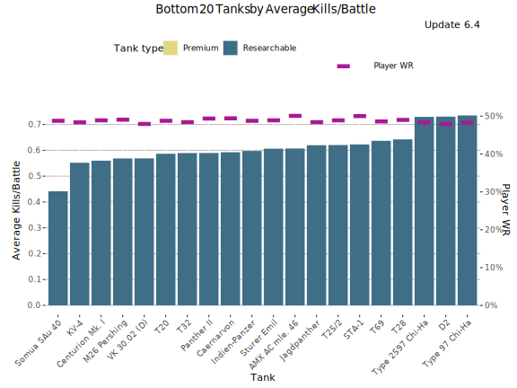
Lowest Average Kills/Battle - Table
Average WR denotes average WR in a tank across all the players during the update. Player WR denotes the tank’s players’ average WR across all the tanks during the update.
| Tank | Average Kills/Battle | Average WR | Player WR | Players | Battles/Player | Tank type |
|---|---|---|---|---|---|---|
| Centurion Mk. I | 0.58 | 47% | 49.4% | 1 277 | 62 | Researchable |
| VK 30.02 (D) | 0.58 | 47.3% | 48.2% | 565 | 60 | Researchable |
| Panther II | 0.60 | 47.5% | 49.7% | 1 668 | 69 | Researchable |
| T20 | 0.60 | 47.6% | 49.2% | 994 | 61 | Researchable |
| M26 Pershing | 0.59 | 47.8% | 49.5% | 1 087 | 64 | Researchable |
| KV-4 | 0.57 | 47.8% | 48.6% | 2 284 | 67 | Researchable |
| T25/2 | 0.64 | 47.9% | 49.5% | 1 862 | 58 | Researchable |
| Indien-Panzer | 0.61 | 47.9% | 49.1% | 1 049 | 67 | Researchable |
| AMX AC mle. 46 | 0.62 | 48% | 50.4% | 1 349 | 63 | Researchable |
| T32 | 0.60 | 48.1% | 48.9% | 1 360 | 67 | Researchable |
| STA-1 | 0.64 | 48.1% | 50.4% | 1 060 | 68 | Researchable |
| Sturer Emil | 0.64 | 48.1% | 49.6% | 3 039 | 69 | Researchable |
| Somua SAu 40 | 0.46 | 48.2% | 49.9% | 579 | 25 | Researchable |
| T28 | 0.66 | 48.2% | 49.6% | 605 | 72 | Researchable |
| Jagdpanther | 0.64 | 48.2% | 48.8% | 2 681 | 59 | Researchable |
| Challenger | 0.63 | 48.3% | 50.3% | 2 757 | 53 | Researchable |
| Y5 ELC bis | 0.64 | 48.3% | 50.1% | 2 730 | 54 | Premium |
| AT 7 | 0.58 | 48.3% | 48.3% | 746 | 61 | Researchable |
| T69 | 0.66 | 48.3% | 48.9% | 1 380 | 75 | Researchable |
| Caernarvon | 0.61 | 48.3% | 49.7% | 1 211 | 68 | Researchable |
Lowest Spot Rate
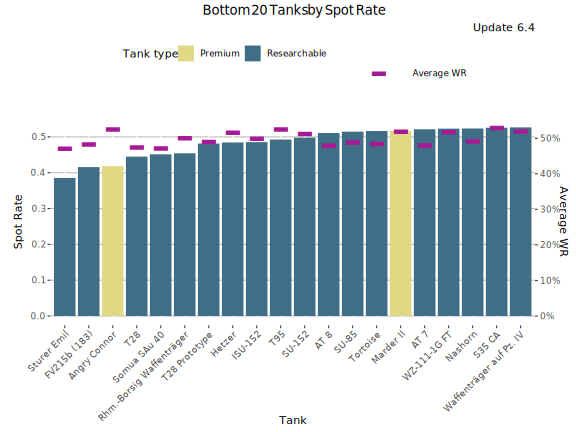
Lowest Spot Rate - Table
| Tank | Spot Rate | Average WR | Player WR | Players | Battles/Player | Tank type |
|---|---|---|---|---|---|---|
| Sturer Emil | 0.40 | 48.1% | 49.6% | 3 039 | 69 | Researchable |
| Angry Connor | 0.40 | 52.6% | 51.3% | 422 | 77 | Premium |
| FV215b (183) | 0.42 | 48.5% | 52.5% | 9 586 | 85 | Researchable |
| Somua SAu 40 | 0.45 | 48.2% | 49.9% | 579 | 25 | Researchable |
| T28 | 0.45 | 48.2% | 49.6% | 605 | 72 | Researchable |
| Rhm.-Borsig Waffenträger | 0.46 | 50.5% | 51.5% | 10 715 | 91 | Researchable |
| Hetzer | 0.47 | 53.6% | 49.3% | 1 928 | 42 | Researchable |
| T28 Prototype | 0.49 | 49.5% | 50% | 2 107 | 72 | Researchable |
| ISU-152 | 0.49 | 50.5% | 51.1% | 9 713 | 85 | Researchable |
| T95 | 0.50 | 52.8% | 51% | 974 | 94 | Researchable |
| SU-152 | 0.51 | 51.8% | 51.3% | 10 179 | 78 | Researchable |
| SU-85 | 0.51 | 49.4% | 48.9% | 2 355 | 51 | Researchable |
| AT 8 | 0.51 | 49.1% | 48.8% | 1 077 | 51 | Researchable |
| Tortoise | 0.52 | 48.9% | 48.9% | 1 390 | 92 | Researchable |
| S35 CA | 0.52 | 53.6% | 50.9% | 1 719 | 48 | Researchable |
| AT 7 | 0.53 | 48.3% | 48.3% | 746 | 61 | Researchable |
| ISU-130 | 0.53 | 48.9% | 51.7% | 477 | 61 | Premium |
| Waffenträger auf Pz. IV | 0.53 | 52.4% | 52.3% | 12 992 | 124 | Researchable |
| WZ-111-1G FT | 0.53 | 52.2% | 51.4% | 1 611 | 69 | Researchable |
| Jagdtiger | 0.53 | 50% | 49.7% | 2 615 | 78 | Researchable |
Lowest Hit Rate
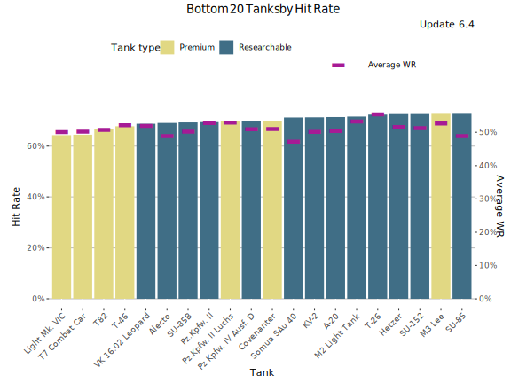
Lowest Hit Rate - Table
| Tank | Hit Rate | Average WR | Player WR | Players | Battles/Player | Tank type |
|---|---|---|---|---|---|---|
| VK 16.02 Leopard | 69.2% | 53.4% | 51.2% | 10 641 | 68 | Researchable |
| Alecto | 70.8% | 50.6% | 48.7% | 945 | 32 | Researchable |
| Pz.Kpfw. IV Ausf. D | 71.2% | 52.7% | 48.7% | 2 417 | 46 | Researchable |
| KV-2 | 71.8% | 50.7% | 50.5% | 11 325 | 74 | Researchable |
| SU-85B | 72.5% | 52.1% | 49.1% | 1 000 | 39 | Researchable |
| A-20 | 72.6% | 51.3% | 48.3% | 1 528 | 37 | Researchable |
| SU-152 | 72.7% | 51.8% | 51.3% | 10 179 | 78 | Researchable |
| Pz.Kpfw. II | 72.7% | 52.9% | 48.7% | 774 | 33 | Researchable |
| Angry Connor | 72.9% | 52.6% | 51.3% | 422 | 77 | Premium |
| SU-85 | 73.6% | 49.4% | 48.9% | 2 355 | 51 | Researchable |
| Somua SAu 40 | 73.6% | 48.2% | 49.9% | 579 | 25 | Researchable |
| Nightmare | 73.8% | 52.5% | 50.7% | 16 595 | 53 | Premium |
| SU-100 | 74.4% | 51.9% | 50% | 5 353 | 66 | Researchable |
| Hetzer | 74.9% | 53.6% | 49.3% | 1 928 | 42 | Researchable |
| Lago | 74.9% | 51.6% | 48.9% | 5 995 | 29 | Researchable |
| ISU-152 | 75.1% | 50.5% | 51.1% | 9 713 | 85 | Researchable |
| M7 | 75.1% | 55.2% | 49.4% | 2 429 | 41 | Researchable |
| SU-85I | 75.2% | 52% | 49.9% | 876 | 60 | Premium |
| M2 Light Tank | 75.3% | 57.7% | 50.3% | 565 | 41 | Researchable |
| ARL V39 | 75.4% | 50.1% | 51% | 1 254 | 54 | Researchable |
Least Played Tanks (Players)
This graph shows the least played tanks by players during the update 6.4. The graph includes also unreleased tanks in super-testing.
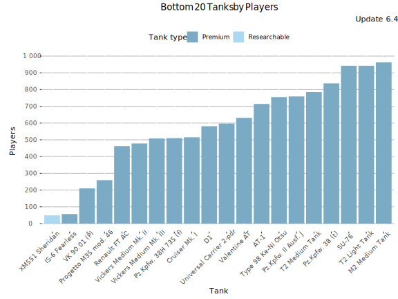
Least Played Tanks - Table
| Tank | Players | Average WR | Battles/Player | Tank type |
|---|---|---|---|---|
| XM551 Sheridan | 49 | 51.3% | 17 | Researchable |
| IS-6 Fearless | 57 | 58.1% | 3 | Premium |
| VK 90.01 (P) | 210 | 62.1% | 16 | Premium |
| Progetto M35 mod. 46 | 259 | 72.6% | 68 | Premium |
| Renault FT AC | 462 | 56.1% | 3 | Premium |
| Vickers Medium Mk. II | 478 | 54.6% | 4 | Premium |
| Vickers Medium Mk. III | 508 | 51.6% | 5 | Premium |
| Pz.Kpfw. 38H 735 (f) | 510 | 57.7% | 2 | Premium |
| Cruiser Mk. I | 515 | 57.2% | 3 | Premium |
| D1 | 581 | 58.1% | 3 | Premium |
| Universal Carrier 2-pdr | 597 | 54.7% | 4 | Premium |
| Valentine AT | 631 | 60.3% | 6 | Premium |
| AT-1 | 714 | 56.4% | 3 | Premium |
| Type 98 Ke-Ni Otsu | 755 | 67.2% | 27 | Premium |
| Pz.Kpfw. II Ausf. J | 759 | 53.8% | 3 | Premium |
| T2 Medium Tank | 785 | 54.8% | 4 | Premium |
| Pz.Kpfw. 38 (t) | 837 | 57.1% | 5 | Premium |
| T2 Light Tank | 942 | 56.2% | 4 | Premium |
| SU-76 | 942 | 54.9% | 6 | Premium |
| M2 Medium Tank | 962 | 54.8% | 6 | Premium |
Least played tanks (Battles)
This graph shows the most played tanks by number of battles during the update 6.4.
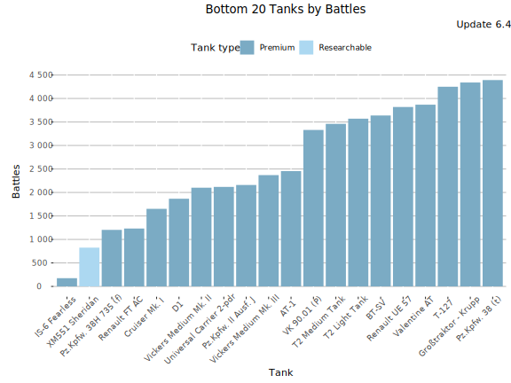
Least Played Tanks - Table
| Tank | Battles | Average WR | Players | Battles/Player | Tank type |
|---|---|---|---|---|---|
| IS-6 Fearless | 175 | 58.1% | 57 | 3 | Premium |
| XM551 Sheridan | 825 | 51.3% | 49 | 17 | Researchable |
| Pz.Kpfw. 38H 735 (f) | 1 203 | 57.7% | 510 | 2 | Premium |
| Renault FT AC | 1 232 | 56.1% | 462 | 3 | Premium |
| Cruiser Mk. I | 1 651 | 57.2% | 515 | 3 | Premium |
| D1 | 1 866 | 58.1% | 581 | 3 | Premium |
| Vickers Medium Mk. II | 2 101 | 54.6% | 478 | 4 | Premium |
| Universal Carrier 2-pdr | 2 118 | 54.7% | 597 | 4 | Premium |
| Pz.Kpfw. II Ausf. J | 2 159 | 53.8% | 759 | 3 | Premium |
| Vickers Medium Mk. III | 2 369 | 51.6% | 508 | 5 | Premium |
| AT-1 | 2 454 | 56.4% | 714 | 3 | Premium |
| VK 90.01 (P) | 3 330 | 62.1% | 210 | 16 | Premium |
| T2 Medium Tank | 3 460 | 54.8% | 785 | 4 | Premium |
| T2 Light Tank | 3 570 | 56.2% | 942 | 4 | Premium |
| BT-SV | 3 638 | 54.7% | 1 039 | 4 | Premium |
| Renault UE 57 | 3 819 | 54.1% | 1 234 | 3 | Premium |
| Valentine AT | 3 868 | 60.3% | 631 | 6 | Premium |
| T-127 | 4 250 | 53.7% | 1 051 | 4 | Premium |
| Großtraktor - Krupp | 4 340 | 54.1% | 1 090 | 4 | Premium |
| Pz.Kpfw. 38 (t) | 4 392 | 57.1% | 837 | 5 | Premium |
-

This work is licensed under a Creative Commons Attribution-ShareAlike 4.0 International License.
-

-

Blitzanalysiz() is a player-created website for World of Tanks: Blitz and developed in accordance with WG DPP. This site is not an official Wargaming or World of Tanks: Blitz website. World of Tanks Blitz and Wargaming are trademarks of Wargaming.net Limited. Game content and materials copyright © Wargaming.net. All rights reserved.